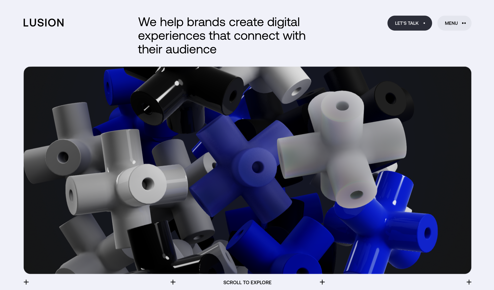

scrolly
telling
the impact of
scrollytelling
on user engagement
Scroll to get started
Scrollytelling
combines
Storytelling
with
Storytelling
For Example this Message
Or this one
They appear as you scroll down
And dissapear as you go back up
